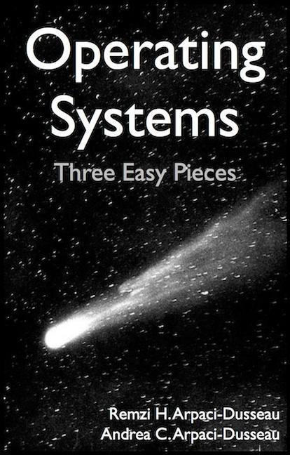
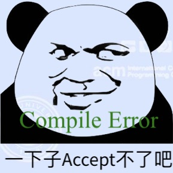
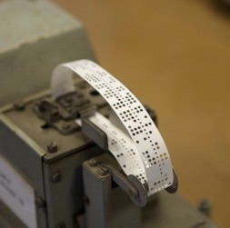
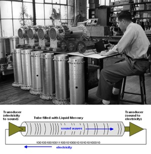
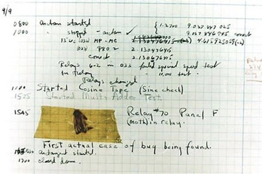
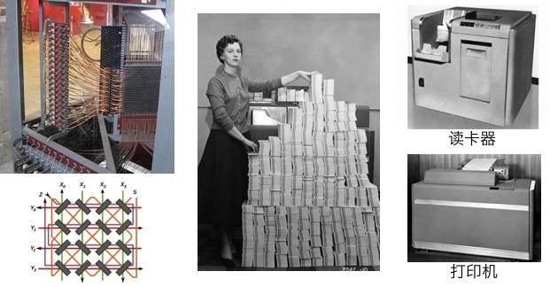
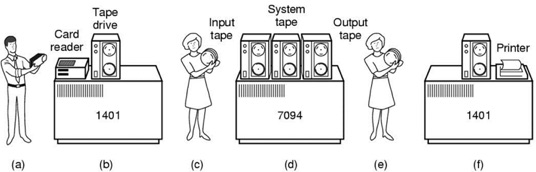
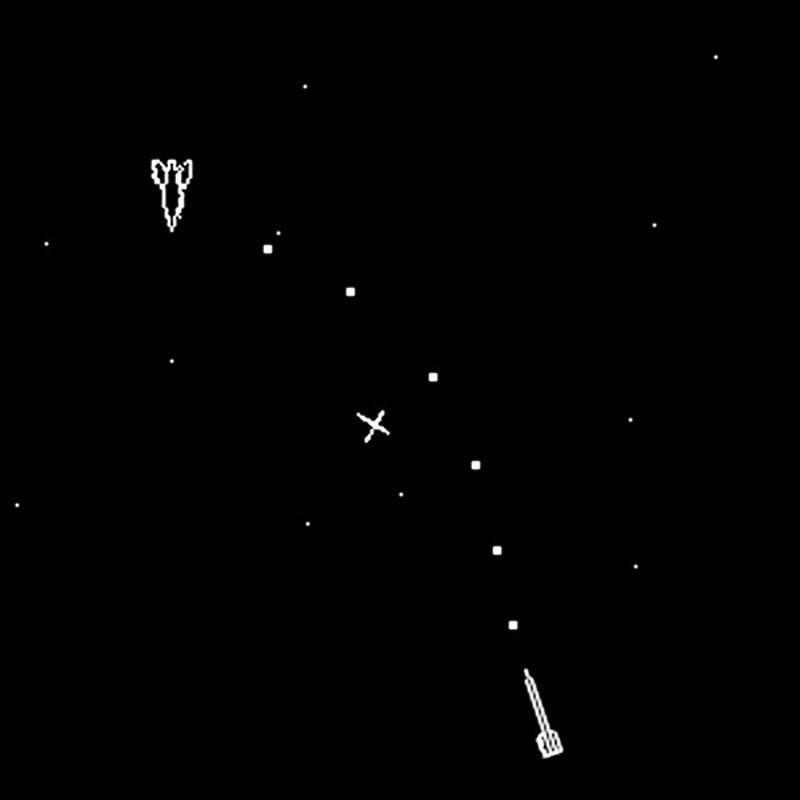
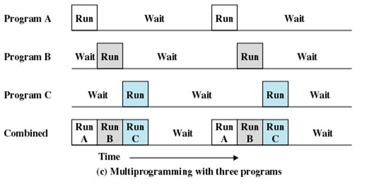

<html>
  <Head>
<meta http-equiv="Content-Type" content="text/html; charset=utf-8">

    
    

    <link rel="stylesheet" href="../static/css/fonts/crmison.css"/>
    <link rel="stylesheet" href="../static/css/fonts/fira_code.css"/>
    <link rel="stylesheet" href="../static/css/fonts/ptsans.css"/>
    <link rel="stylesheet" href="../static/css/katex.min.css"/>
    <link rel="stylesheet" href="../static/css/wiki.css"/>
    <link rel="stylesheet" href="../static/css/codehilite.css"/>

    <script src="../static/js/jquery.min.js"></script>
    <script src="../static/js/bootstrap.bundle.min.js"></script>
    <script src="../static/js/katex.min.js"></script>
    
<link rel="stylesheet" href="../static/css/reveal.css"/>
<link rel="stylesheet" href="../static/css/reveal-slides.css"/>


    <title>操作系统概述</title>
  </Head>
  <body>
   
   

<div class="reveal">
  <div class="slides">
    <section>
<div class="slide-container"><div class="center middle"><h1 id="_1">操作系统概述</h1>
<div plugin="include(page='Slides_Author')"><div class="hidden-in-outline author-block author-affiliation">
<p><a href="http://ics.nju.edu.cn/~jyy">蒋炎岩</a></p>
</div>
<div class="row hidden-in-outline author-block justify-content-md-center">
<p><div class="author-affiliation">    <a href="http://www.nju.edu.cn/"><p>南京大学</p>    </img></a>
  </div>
  <div class="author-affiliation">
   <a href="http://cs.nju.edu.cn/"><p>计算机科学与技术系</p>
    </img></a>
  </div>
  <div class="author-affiliation">
    <a href="http://moon.nju.edu.cn/"><p>计算机软件研究所</p>
    </img></a>
  </div></p>
</div></div></div></div>
</section>

<section>
<div class="slide-container"><div class=""><h2 id="_1">本讲概述</h2>
<blockquote>
<p>问题：我们每天都<span class="red">使用</span>操作系统</p>
<ul>
<li>玩个游戏开心一下 (Windows)</li>
<li>打开 bilibili app 看视频直播 (Android/iOS)</li>
<li>无处不在的嵌入式设备 (Linux/vxWorks/...)</li>
</ul>
<p>但操作系统显然不是从计算机诞生起就是今天这个样子的。到底什么是操作系统？为什么要有操作系统？是什么促使了操作系统一步步发展成今天的样子？</p>
</blockquote>
<p>本讲内容</p>
<ul>
<li>课程基本信息</li>
<li>操作系统的概述/发展历史</li>
</ul></div></div>
</section>

<section>
<section>
<div class="slide-container"><div class="center middle"><h1 id="_1">课程概述</h1></div></div>
</section>
<section>
<div class="slide-container"><div class=""><h2 id="_1">操作系统：极简概述</h2>
<blockquote>
<p>Operating System: A body of software, in fact, that is responsible for <span class="red">making it easy to run programs</span> (even allowing you to seemingly run many at the same time), allowing programs to share memory, enabling programs to interact with devices, and other fun stuff like that.<span class="float-right">——OSTEP</span></p>
</blockquote>
<p>应用程序视角：</p>
<ul>
<li>操作系统就是一组 API 规约 (specification)</li>
<li>定义了一系列对象 (进程、文件、设备……) 上的操作</li>
<li><span class="red">管理硬件资源</span>、<span class="red">为执行的程序提供服务</span></li>
</ul>
<p>硬件视角：</p>
<ul>
<li>操作系统是拥有访问全部硬件权限的程序 (操作系统就是个 C 程序)</li>
<li>操作系统在加载第一个应用程序执行后，进入后台作为 “中断处理程序” 在后台管理整个计算机系统</li>
</ul></div></div>
</section>
<section>
<div class="slide-container"><div class=""><h2 id="_1">课程内容</h2>
<p>课程从 UNIX/Linux 的视角回答两个问题</p>
<ul>
<li><p>问题1 (<span class="red">设计/应用视角</span>)：操作系统应该提供怎样的 API？</p>
<ul>
<li>它们叫 “系统调用”</li>
<li>通过 MiniLabs 学习系统调用的使用</li>
</ul>
</li>
<li><p>问题2 (<span class="red">实现/硬件视角</span>)：如何在硬件上实现这些 API？</p>
<ul>
<li>实现操作系统时用到的技术：中断、上下文切换、虚存……</li>
<li>讲解一个迷你操作系统的代码</li>
<li>自己动手编写操作系统内核</li>
</ul>
</li>
</ul></div></div>
</section>
<section>
<div class="slide-container"><div class=""><h2 id="_1">学完这门课，你会得到什么？</h2>
<p>Literally everything</p>
<ul>
<li>在计算机系统上为所欲为的能力</li>
<li>编写一切 “能写出来” 程序的能力</li>
</ul>
<div class="fragment">
<hr></hr>
<p>回答一个非常 fundamental 的问题：</p>
<pre class="codehilite"><code class="language-text">$ cat a.c
int main() {
  printf("Hello World\n");
}

$ gcc a.c && ./a.out
Hello World</code></pre>


<p>从软件到硬件到底发生了什么？</p>
<ul>
<li>执行的第一条指令在哪里？做什么？</li>
<li>执行了哪些系统调用？</li>
<li>在哪些可能的地方存在缓存？</li>
<li>……</li>
</ul>
</div></div></div>
</section>
</section>

<section>
<section>
<div class="slide-container"><div class="center middle"><h1 id="policies">Policies</h1></div></div>
</section>
<section>
<div class="slide-container"><div class=""><h2 id="_1">信息发布与评分</h2>
<div markdown="1"><div class="fenced fenced-red"><div>
<p>信息发布：所有内容均在课程网站 (<a href="http://ics.nju.edu.cn/~jyywiki"><code>ics.nju.edu.cn/~jyywiki</code></a>) 发布</p>
<ul>
<li>slides, lecture notes, 阅读材料、实验作业……</li>
<li>请坚持不上课的同学及时关注</li>
</ul>
</div></div></div>
<div class="fragment">
<hr></hr>
<p>成绩组成</p>
<ul>
<li>(原理部分) 期中测验 10% (可能因疫情取消，叠加到期末考试)</li>
<li>(原理部分) 期末考试 40%</li>
<li>(实验部分) Mini Labs 25%<ul>
<li>100% 客观评价 (Online Judge)</li>
</ul>
</li>
<li>(实验部分) OS Labs 25%<ul>
<li>绝大部分客观评价 (Online Judge)</li>
</ul>
</li>
<li><span class="red">出勤不计分</span>，不强制到课<ul>
<li>一贯的 policy；如果你觉得看书自学更高效，就不要在课堂上浪费时间</li>
<li>为配合实验，课堂的叙述脉络和教材略有不同</li>
</ul>
</li>
</ul>
</div></div></div>
</section>
<section>
<div class="slide-container"><div class=""><h2 id="operating-systems-three-easy-pieces-ostep">教材：Operating Systems: Three Easy Pieces (OSTEP；黑书)</h2>
<p></img></p>
<p>OSTEP：目前世界上最好的操作系统教材 (没有之一)</p>
<ul>
<li>选好教材，就成功了一大半</li>
<li>Open Access (免费)</li>
<li>作者 (Remzi and Andrea) 是计算机系统界的 “神雕侠侣”；storage system 的顶级专家</li>
<li>2018 年 1.00 版；我们从 beta 时开始使用</li>
</ul>
<hr></hr>
<p>其他<a href="http://localhost:5000/wiki/OS_References">阅读材料</a></p>
<ul>
<li>UNIX/Linux 入门</li>
<li>C 语言程序设计</li>
<li>操作系统设计与实现</li>
</ul></div></div>
</section>
<section>
<div class="slide-container"><div class=""><h2 id="class-meetings">Class Meetings：原理课</h2>
<p>顺序调整后的 operating systems: three easy pieces</p>
<ul>
<li>并发 (concurrency)<ul>
<li>多处理器/共享内存线程</li>
<li>同步、互斥、并发 bugs</li>
</ul>
</li>
<li>虚拟化 (virtualization)<ul>
<li>进程和虚拟存储</li>
</ul>
</li>
<li>持久化 (persistence)<ul>
<li>文件系统</li>
</ul>
</li>
</ul>
<hr></hr>
<div markdown="1"><div class="fenced fenced-blue"><div>
<p>Q: 为什么调整顺序？？？</p>
<p>A: 可以确保在结束并发部分内容后，大家可以开始多处理器内核的实验</p>
</div></div></div></div></div>
</section>
<section>
<div class="slide-container"><div class=""><h2 id="class-meetings">Class Meetings：代码课</h2>
<p>操作系统设计 (应用视角/设计)</p>
<ul>
<li>demo 小程序</li>
<li>各类系统工具的实现 (strace, gdb, ...)</li>
</ul>
<hr></hr>
<p>操作系统实现 (硬件视角/实现)</p>
<ul>
<li><a href="http://pdos.csail.mit.edu/6.828/xv6">xv6</a><ul>
<li>2006 年 Russ Cox, Frans Kaashoek, Robert Morris 在 MIT 重写的 UNIX 系统</li>
<li>使用 i386 版本 (考虑到大家对指令集的熟悉)</li>
</ul>
</li>
<li><a href="AM.html">AbstractMachine</a><ul>
<li>2017 年为 Project-N 设计的抽象层</li>
<li>在《计算机系统基础》中已经使用过</li>
</ul>
</li>
</ul></div></div>
</section>
<section>
<div class="slide-container"><div class=""><h2 id="_1">操作系统课中的编程</h2>
<blockquote>
<p>Physics is to sex as mathematics is to masturbation.</p>
<p>—— Richard (Dick) Feynman</p>
</blockquote>
<p><span class="red">编程实践是理解计算机系统的唯一途径</span></p>
<hr></hr>
<p>为此，你需要准备：</p>
<ul>
<li>一台安装 <span class="red">x86-64</span> Linux 系统的计算机<ul>
<li>在网上搜索教程，自行安装</li>
<li>任何发行版皆可，但 Ubuntu/Debian 最省心</li>
<li>允许虚拟机；不推荐 Docker</li>
</ul>
</li>
<li><span class="red">脑子</span> (不要想任何当然)<ul>
<li>出现问题确保你仔细阅读了 error messages 和 logs</li>
<li>机器永远是对的；未测代码永远是错的</li>
</ul>
</li>
</ul></div></div>
</section>
<section>
<div class="slide-container"><div class=""><h2 id="_1">编程实验</h2>
<div markdown="1"><div class="fenced fenced-red"><div>
<p>无所谓听不听课看不看书，独立完成编程作业即可理解操作系统。</p>
</div></div></div>

<p>应用视角 (设计)：Mini Labs x 6；使用 OS API 实现 “黑科技” 代码</p>
<p></img></p>
<hr></hr>
<p>硬件视角 (实现)：OS Labs x 5；自己动手实现一个真正的操作系统</p>
<ul>
<li>基于 AbstractMachine，以 x86-64 为主</li>
</ul></div></div>
</section>
<section>
<div class="slide-container"><div class=""><h2 id="contd">编程实验 (cont'd)</h2>
<div markdown="1"><div class="fenced fenced-red"><div>
<p>如果没有好好学习《计算机系统基础》，编程实验一开始可能很！难！</p>
<p>但操作系统实验依然是 self-contained！抗住！</p>
<ul>
<li>为此我们设置了软性的 deadline<ul>
<li>按时提交加分 (+ 5%)</li>
<li>如有困难超时提交也不扣分</li>
</ul>
</li>
<li>所有实验的 hard deadline 在期末考试后附近</li>
</ul>
</div></div></div>

<hr></hr>
<p>给掉队同学的建议</p>
<ul>
<li>重新学习 C 语言编程</li>
<li>重新学习 C 语言编程</li>
<li>重新学习 C 语言编程</li>
<li>这门课的 prerequisite 本质上只有扎实的编程功底</li>
</ul></div></div>
</section>
<section>
<div class="slide-container"><div class=""><h2 id="online-judge">三周目新增：Online Judge</h2>
<p></img>
本学期采用<a href="OS2020_Labs.html">在线评测</a></p>
<ul>
<li>Mini Labs 100% 客观评分</li>
<li>OS Labs 大部分客观评分</li>
</ul>
<hr></hr>
<p>特点：<span class="red">严格</span></p>
<ul>
<li>代码不规范 → <code>-Wall -Werror</code> 编译出错<ul>
<li>例子：unused variable</li>
</ul>
</li>
<li>代码不可移植 → 编译/运行时出错<ul>
<li>例子：<code>int x = (int)&y;</code></li>
</ul>
</li>
<li>硬编码路径/文件名 → 运行时出错<ul>
<li>例子：<code>fopen("/home/jyy/a.txt", "r")</code></li>
</ul>
</li>
<li>糊弄 → 测试失败</li>
</ul>
<div markdown="1"><div class="fenced fenced-blue"><div>
<p>预期同学们一开始可能会痛不欲生，但能帮助大家树立正确的编程习惯。</p>
</div></div></div></div></div>
</section>
</section>

<section>
<section>
<div class="slide-container"><div class="center middle"><h1 id="_1">操作系统的历史</h1></div></div>
</section>
<section>
<div class="slide-container"><div class=""><h2 id="_1">回顾：什么是操作系统？</h2>
<blockquote>
<p>Operating System: A body of software, in fact, that is responsible for <span class="red">making it easy to run programs</span> (even allowing you to seemingly run many at the same time), allowing programs to share memory, enabling programs to interact with devices, and other fun stuff like that.<span class="float-right">——OSTEP</span></p>
</blockquote>
<p>理解操作系统的历史，就要理解计算机 (和程序) 发展的历史</p>
<ul>
<li>在历史上，操作系统上增加了什么对象、提供什么操作？</li>
</ul></div></div>
</section>
<section>
<div class="slide-container"><div class=""><h2 id="1940s">1940s 的计算机</h2>
<p></img>
跨时代、非凡的天才设计，但很简单 (还不如我们数电实验课做的 CPU 复杂呢)：</p>
<ul>
<li>计算机系统就是一个状态机 (ICS课程的精髓)</li>
<li>标准的 Mealy 型数字电路</li>
</ul>
<hr></hr>
<p>实现：</p>
<p></img></p>
<ul>
<li>逻辑门：<a href="https://www.bilibili.com/video/av59005720">电子管 (vacuum tubes)</a></li>
<li>存储器：延迟线 (delay lines)</li>
<li>输入/输出：打孔纸带/指示灯</li>
</ul></div></div>
</section>
<section>
<div class="slide-container"><div class=""><h2 id="1940s">1940s 的计算机程序</h2>
<p>ENIAC 程序是用物理线路 “hard-wire” 的</p>
<ul>
<li>重编程需要重新接线</li>
</ul>
<hr></hr>
<p>EDSAC 上最早成功运行的程序：打印平方数、素数表……</p>
<ul>
<li>任何纯粹“计算”型的程序——比如微分方程的数值求解 (物理动力系统模拟)</li>
<li>大家还在和真正的 “bugs” 战斗</li>
</ul>
<p><span class="center"></img> </span></p></div></div>
</section>
<section>
<div class="slide-container"><div class=""><h2 id="1940s">1940s 的操作系统</h2>
<blockquote>
<p>操作系统：使程序能更好运行的系统软件</p>
<p>1940s 的计算机程序是相对机械的数值计算</p>
<ul>
<li>不需要也没有操作系统</li>
<li>操作系统中唯一的对象就是独占计算机运行的程序</li>
</ul>
</blockquote></div></div>
</section>
<section>
<div class="slide-container"><div class=""><h2 id="1950s">1950s 的计算机</h2>
<p>更快更小的逻辑门 (晶体管)、更大的内存 (磁芯)、丰富的 I/O 设备</p>
<ul>
<li>I/O 设备的速度已经严重低于处理器的速度</li>
<li>中断机制出现 (1953)</li>
</ul>
<p><span class="center"></img></span></p></div></div>
</section>
<section>
<div class="slide-container"><div class=""><h2 id="1950s">1950s 的计算机程序</h2>
<p>可以执行更复杂的任务，包括通用的计算任务</p>
<ul>
<li>希望使用计算机的人越来越多</li>
<li>程序和程序之间开始需要协作</li>
<li>程序并不希望直接用指令访问 I/O 设备，而是希望能方便地管理 “文件”</li>
</ul>
<p><span class="center"></img></span></p></div></div>
</section>
<section>
<div class="slide-container"><div class=""><h2 id="1950s">1950s 的操作系统</h2>
<hr></hr>
<blockquote>
<p>操作系统：使程序能更好运行的系统软件</p>
<p>1950s 有了<span class="red">让多个程序共享一台计算机的需求</span></p>
<ul>
<li>计算机非常贵 (50,000-1,000,000$)，集中管理、排队使用</li>
<li>希望程序切换能尽量无缝</li>
<li>希望提供一些程序共同需要的功能，例如读写文件</li>
</ul>
<p>于是有了<span class="red">操作 (operate) 任务 (jobs) 的系统 (system)</span></p>
<ul>
<li>(批处理系统)</li>
<li>操作系统是一个简单的串行程序调度器和一系列库函数</li>
<li>操作系统中开始有设备、文件、任务，但只有一个独占计算机运行的程序</li>
</ul>
</blockquote></div></div>
</section>
<section>
<div class="slide-container"><div class=""><h2 id="1960s">1960s 的计算机</h2>
<p>集成电路、总线出现</p>
<ul>
<li>更快的处理器</li>
<li>更快、更大的内存；虚拟存储出现</li>
<li>更丰富的 I/O 设备；完善的中断/异常机制</li>
</ul>
<p><span class="center"></img></span></p></div></div>
</section>
<section>
<div class="slide-container"><div class=""><h2 id="1960s">1960s 的计算机程序</h2>
<p>高级语言和编译器出现：FORTRAN (1959), COBOL (1960), APL (1962), BASIC (1965)</p>
<ul>
<li>计算机科学家们已经在今天难以想象的计算力下开发惊奇的程序</li>
</ul>
<p><span class="center"></img> <span class="center">(Spacewar, 1962)</span></span></p></div></div>
</section>
<section>
<div class="slide-container"><div class=""><h2 id="1960s">1960s 的操作系统</h2>
<blockquote>
<p>操作系统：使程序能更好运行的系统软件</p>
<p>因为计算资源的增加，有了<span class="red">同时将多个程序载入内存</span>的能力</p>
<ul>
<li>操作系统需要决定将哪些程序装入内存</li>
<li>在多个隔离的程序之间<span class="red">切换</span><ul>
<li>隔离使一个程序出 bug 不会 crash 整个系统</li>
</ul>
</li>
<li>操作系统中多了 “进程” 对象和进程管理 API</li>
</ul>
</blockquote>
<p><span class="center"></img></span></p></div></div>
</section>
<section>
<div class="slide-container"><div class=""><h2 id="1960s-contd">1960s 的操作系统 (cont'd)</h2>
<blockquote>
<p>既然操作系统已经可以在程序之间<span class="red">切换</span>，为什么不让它们<span class="red">定时切换</span>呢？</p>
<ul>
<li>我们有时钟中断呀<ul>
<li>时钟中断：使程序在执行时，异步地插入函数调用</li>
<li>由操作系统 (调度策略) 决定是否要切换到另一个程序执行</li>
</ul>
</li>
<li>Multics (MIT, 1965)<ul>
<li>从此计算机系统的发展进入 modern era</li>
</ul>
</li>
</ul>
</blockquote></div></div>
</section>
<section>
<div class="slide-container"><div class=""><h2 id="1970s">1970s 的计算机</h2>
<p>集成电路空间发展，“计算机” 已与今日无大异</p>
<ul>
<li>CISC 指令集；中断、I/O、异常、MMU、网络</li>
<li>个人计算机、超级计算机……</li>
</ul>
<p><span class="center"> </img></img>
<p><span class="center">(Apple II, 1977; Cray-1, 1976)</span></p></span></p></div></div>
</section>
<section>
<div class="slide-container"><div class=""><h2 id="1970s">1970s 的计算机程序</h2>
<p>PASCAL (1970), C (1972), …</p>
<ul>
<li>今天能办到的，那个时代已经都能办到了——上天入地、图像声音视频、人工智能……</li>
<li>计算机不再是专业人士的专属</li>
</ul>
<p><span class="center"></img></span>
<p><span class="center">(Wordstar, 1979)</span></p></p></div></div>
</section>
<section>
<div class="slide-container"><div class=""><h2 id="1970s">1970s+ 的操作系统</h2>
<p>分时系统走向成熟，UNIX 诞生并走向完善 (1969)</p>
<ul>
<li>1973: 信号 API、管道 (对象)、grep (应用程序)</li>
<li>1983: BSD socket (对象)</li>
<li>1984: procfs (对象)…… </li>
</ul>
<hr></hr>
<p>UNIX 中创造性的理念几乎统治了操作系统的设计，并对今天的操作系统设计和实现产生了深远的影响</p>
<ul>
<li>Ken Thompson and Dennis Ritchie received the Turing Award <em>for their development of generic operating systems theory</em> and specifically <em>for the implementation of the UNIX operating system</em>.</li>
<li>1BSD (1977), GNU (1983), MacOS (1984), AIX (1986), Minix (1987), Windows (1985), Linux 0.01 (1991), Windows NT (1993), Debian (1996), Windows XP (2002), Ubuntu (2004), iOS (2007), Android (2008), Windows 10 (2015), ……</li>
</ul></div></div>
</section>
<section>
<div class="slide-container"><div class=""><h2 id="operating-systems-three-easy-pieces">Operating Systems: Three Easy Pieces</h2>
<p>1970s 开始就已经拥有了完整的 “three easy pieces”</p>
<ul>
<li>虚拟化<ul>
<li>进程、虚拟存储、设备抽象</li>
</ul>
</li>
<li>并发<ul>
<li>多个程序分时共享多个处理器；进程/线程间通信</li>
</ul>
</li>
<li>持久化<ul>
<li>UNIX 文件系统和它的后代们 (ext2, ext3, ext4, btrfs, xfs, zfs, ...)</li>
</ul>
</li>
</ul></div></div>
</section>
</section>

<section>
<div class="slide-container"><div class=""><h2 id="takeaways-and-wrap-up">Takeaways and Wrap-up</h2>
<blockquote>
<p>操作系统解决 “运行多个程序” 的需求</p>
<ul>
<li>这个需求是随着计算机性能的增长自然而然出现的</li>
</ul>
<p>操作系统设计/实现需要考虑的问题</p>
<ul>
<li>如何复用 (虚拟化) 硬件资源，使每个程序看起来都在独占计算机？</li>
<li>提供什么样的 API 使各类程序都能被实现？<ul>
<li>编译器？</li>
<li>浏览器？</li>
<li>IDE？</li>
<li>任务管理器？</li>
<li>游戏外挂？</li>
</ul>
</li>
</ul>
</blockquote></div></div>
</section>
  </div>
</div>

<script src="../static/js/reveal.js"></script>
<script>
  slide_num = -1;
  function update_slide_num(n) {
    if (slide_num == -1) {
      setTimeout(function() {
        if (slide_num != -1) {
          while (!Reveal.isFirstSlide()) {
            Reveal.prev();
          }
          while (Reveal.getSlidePastCount() + 1 < slide_num && !Reveal.isLastSlide()) {
            Reveal.next();
          }
          slide_num = -1;
        }
      }, 500);
      slide_num = 0;
    }
    slide_num = slide_num * 10 + n;
  }

  Reveal.initialize({
    width: 1024,
    height: 768,
    margin: 0,
    slideNumber: 'c/t',
    controls: true,
    progress: false,
    maxScale: 10,
    fragments: true,
    hash: true,
    transition: 'slide',
    transitionSpeed: 'fast',
    backgroundTransition: 'slide',
    hideCursorTime: 1000,
    navigationMode: 'default',
    keyboard: {
      13: 'next',
      48: function() { update_slide_num(0) },
      49: function() { update_slide_num(1) },
      50: function() { update_slide_num(2) },
      51: function() { update_slide_num(3) },
      52: function() { update_slide_num(4) },
      53: function() { update_slide_num(5) },
      54: function() { update_slide_num(6) },
      55: function() { update_slide_num(7) },
      56: function() { update_slide_num(8) },
      57: function() { update_slide_num(9) },
    }
  });
</script>


    <script>
      $(function () {
        $('[data-toggle="tooltip"]').tooltip()
      })

      $("math").each(function() {
        var tex = $(this).text();
        var html = katex.renderToString(tex, {
          displayMode: $(this).attr('class') == 'block-math',
          throwOnError: false
        });
        $(this).replaceWith(html);
      });

      function get_token() {
        var match = document.cookie.match(new RegExp('(^| )token=([^;]+)'));
        if (match) return match[2];
        else return "";
      }

      var token = get_token();
      var hint = "token", box = $("#token-input");

      if (token == "") { box.val(hint); }
      else { box.val(token); }

      function login() {
        var token = box.val()
        document.cookie = 'token=' + token + '; expires=Fri, 31 Dec 9999 23:59:59 GMT;';
        if (token == '') {
          box.val(hint);
        }
      }
    </script>
  </body>
</html>